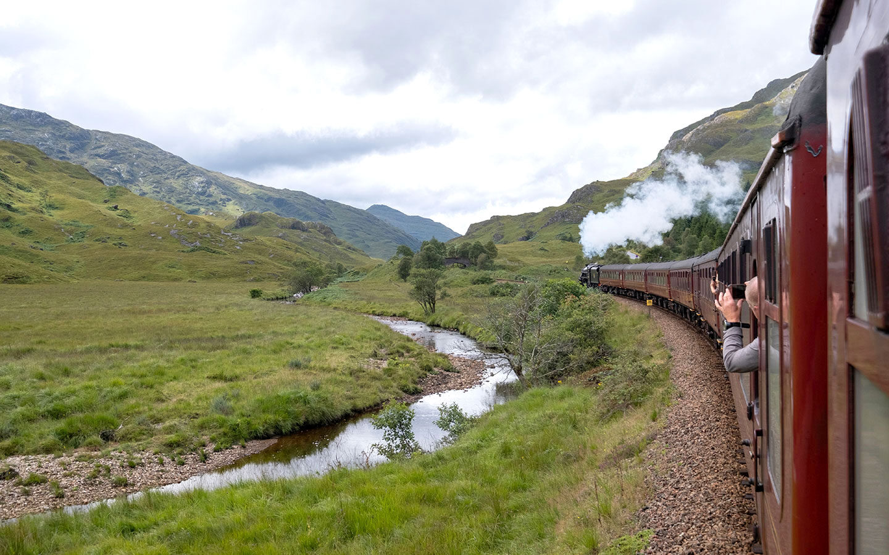

The Hogwarts Express

The Jacobite steam train runs from Fort William to Mallaig in the Scottish Highlands. It crosses the Glenfinnan Viaduct, which the films show the Hogwarts Express crossing.
How to Plan Your Ride
- Check the timetable, since the train usually runs in warmer months.
- Book your tickets early.
- Arrive at the station in good time.
- Bring layers for the Highland weather.
Tickets and times: West Coast Railways.